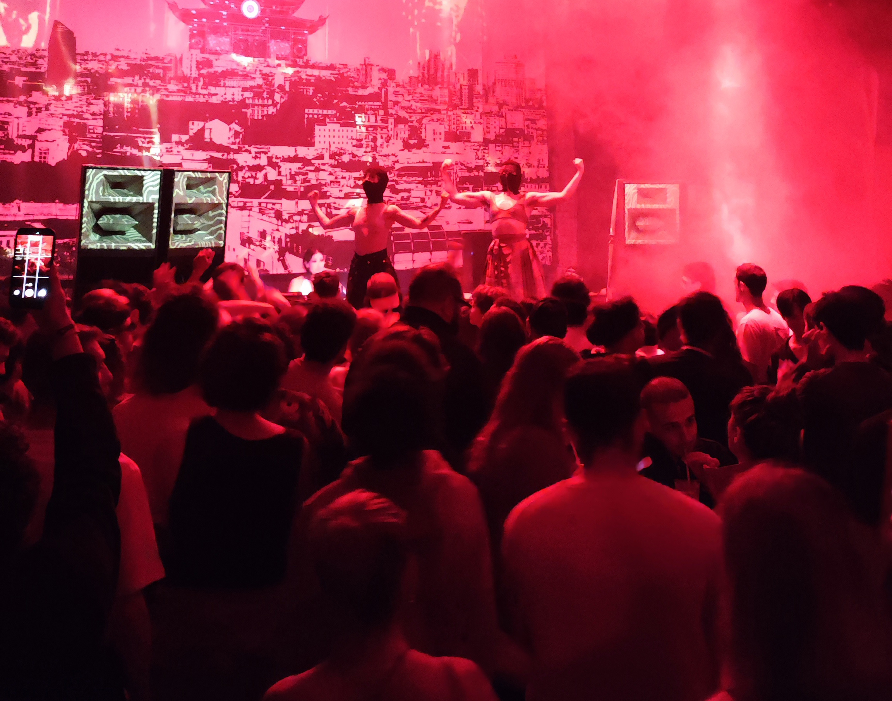
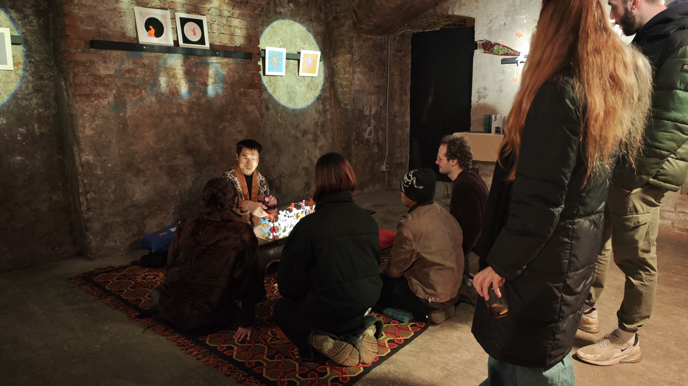
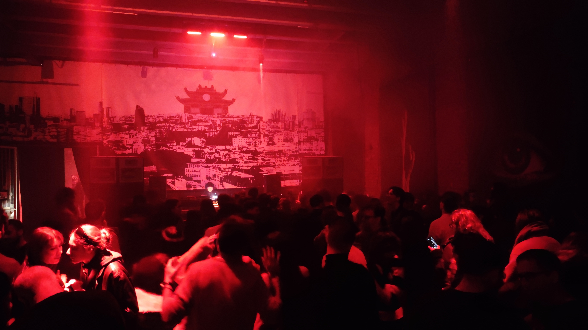

Negli ultimi decenni l'immaginario asiatico è stato spesso utilizzato in Occidente come semplice elemento estetico: una campagna pubblicitaria, un brand, una collezione di moda, una serata techno. Oriental Techno Club nasce con un'intenzione diversa.
Oriental Techno Club è un collettivo composto da persone provenienti da diverse comunità asiatiche che hanno scelto di utilizzare la cultura elettronica come strumento di incontro, dando vita a un progetto che vuole costruire un ponte reale tra Asia ed Europa attraverso musica, arti visive, performance, fotografia, ritualità e ricerca culturale.
Ad ogni apertura il pubblico risponde con entusiasmo: migliaia di persone partecipano ogni settimana agli eventi e ai percorsi artistici e interattivi, trasformando Oriental Techno Club in una delle esperienze più originali del panorama elettronico europeo.
Intervista1. Oriental Techno Club è diventato un punto di riferimento unico in Europa. Come nasce questa visione?
L'idea nasce quando noi, come membri della comunità asiatica di Tempio, organizzavamo da tempo eventi dedicati alla cultura orientale e alla promozione della cultura cinese. Con il tempo si sono uniti anche diversi DJ asiatici formati alla Scuola della Techno, e da questo incontro è nato il desiderio di usare la musica elettronica come linguaggio per raccontare la nostra cultura.
Così, il 9 febbraio 2024, in occasione del Capodanno Cinese, abbiamo organizzato il primo evento di Oriental Techno Club.

2. Qual è la missione culturale che guida Oriental Techno Club fin dal primo giorno?
Fin dall'inizio il nostro obiettivo è stato creare una piattaforma internazionale per artisti e produttori asiatici, favorendo collaborazioni tra le diverse comunità e rafforzando il legame tra gli asiatici che vivono in Oriente e in Occidente.
Vogliamo contribuire a dare sempre più spazio e voce alla musica elettronica asiatica. Lo facciamo attraverso musica di qualità, esperienze visive immersive e un percorso artistico che coinvolge tutti i sensi, cercando di diffondere la cultura in modo creativo, autentico e costante.
3. Perché avete scelto Milano?
Milano è il centro artistico e culturale d'Italia, ma anche uno dei principali punti di incontro in Europa. Qui vive una delle comunità asiatiche più grandi del continente.
Inoltre esiste Tempio, uno spazio unico, inclusivo e multiculturale. È un luogo dove OTC ha potuto crescere sentendosi protetto e sostenuto. Per questo Milano è stata il terreno perfetto per far nascere e sviluppare il progetto.
4. Cosa rende OTC diverso da una normale serata di musica elettronica?
Per noi un evento non si costruisce attorno alla notorietà di un artista, ma alla qualità della sua musica, al suo percorso e al contesto culturale da cui proviene.
OTC non è semplicemente una festa: è un progetto che sente la responsabilità di fare cultura. Abbiamo un'identità molto forte e ogni evento nasce con un significato preciso. Il nostro obiettivo non è riempire una sala, ma creare uno spazio dove la musica diventi un vero strumento di dialogo tra culture.

5. Qual è il risultato di cui andate più orgogliosi in questo anno di attività?
La cosa che ci rende più orgogliosi è vedere sempre più DJ asiatici, provenienti da tutto il mondo, conoscere OTC e voler entrare a far parte del progetto. Allo stesso tempo è cresciuta una community molto fedele e abbiamo ricevuto il sostegno di tantissimi artisti, anche non asiatici.
Ogni sorriso che vediamo durante una serata è il motivo per cui continuiamo ad andare avanti.
Una frase che ci è rimasta particolarmente impressa è quella di un ospite che ci ha detto: "Finalmente ho sentito qualcosa di davvero nuovo e diverso in una scena elettronica occidentale che ormai mi sembrava tutta uguale." Per noi è stato uno dei complimenti più belli.
"Finalmente ho sentito qualcosa di davvero nuovo e diverso in una scena elettronica occidentale che ormai mi sembrava tutta uguale."
6. Che valore ha costruire un ponte tra le culture asiatiche e il pubblico europeo attraverso la club culture?
I club sono luoghi dove si incontrano soprattutto le nuove generazioni. Per questo crediamo che siano uno degli strumenti più diretti ed efficaci per costruire un dialogo culturale. Le collaborazioni istituzionali sono importanti, ma spesso non riescono ad arrivare davvero alle comunità giovani.
La musica, il ballo e l'arte visiva parlano una lingua che non ha confini. Non serve tradurre, basta viverla. Per questo pensiamo che la club culture possa abbattere le barriere culturali in modo molto più spontaneo e naturale.

7. Quale risposta avete ricevuto dal pubblico e dalle comunità asiatiche in questi anni? Gli italiani capiscono il messaggio culturale?
Uno dei commenti che ci ha colpito di più è stato quello di una persona che ci ha detto di aver finalmente trovato qualcosa di nuovo in una scena elettronica occidentale che considerava ormai prevedibile. Ricevere parole come queste ci dà una forza incredibile.
Anche tantissimi artisti asiatici ci sostengono, sia online che dal vivo. Alcuni sono arrivati apposta da altri Paesi solo per vivere un'esperienza OTC, e per noi è un grande onore.
Molti dei nostri ospiti italiani sono persone che hanno già un legame con la cultura asiatica: c'è chi studia una lingua orientale, chi frequenta da anni amici asiatici e chi arriva semplicemente per curiosità.
Naturalmente sappiamo che non tutti possono capire o condividere subito quello che facciamo. Alcuni stanno ancora cercando di comprenderlo, altri forse non lo condivideranno mai. Ma per noi la cosa più importante è continuare a crescere senza fermarci.
Ci ispiriamo molto al concetto taoista dello Yin e dello Yang: dove esistono differenze, esiste anche equilibrio. È proprio questa dualità che rende il dialogo culturale vivo, crea nuove sfide, nuove esperienze e nuove possibilità.
Chi oggi non capisce, magari un giorno capirà. E chi oggi pensa di aver capito tutto, forse domani inizierà a farsi nuove domande.
«Ci ispiriamo molto al concetto taoista dello Yin e dello Yang: dove esistono differenze, esiste anche equilibrio.»
8. Dove immaginate Oriental Techno Club tra dieci anni e quale segno vorreste lasciare nella cultura elettronica europea?
Tra dieci anni ci piacerebbe portare OTC in giro per il mondo, organizzando eventi e tour in città grandi e piccole, fino ai luoghi più lontani e isolati.
Ovunque andremo, vorremmo creare uno spazio d'incontro e piantare un seme della cultura e della community della musica elettronica asiatica.
Per quanto riguarda la scena elettronica europea, il nostro obiettivo non è lasciare un marchio o imporre la nostra presenza. Preferiamo parlare di coesistenza. Come nello Yin e nello Yang, crediamo che culture diverse possano convivere in modo equilibrato, imparando l'una dall'altra. Vederci, ascoltarci e comprenderci a vicenda: è questa, per noi, la forma più alta di scambio culturale.